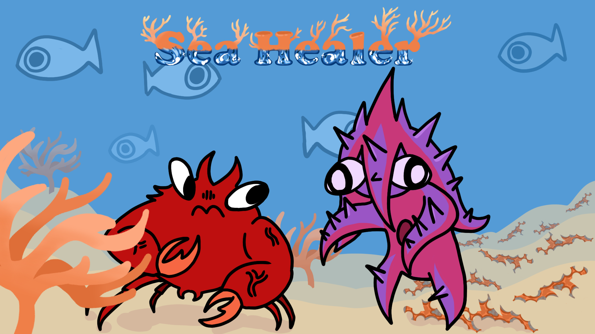
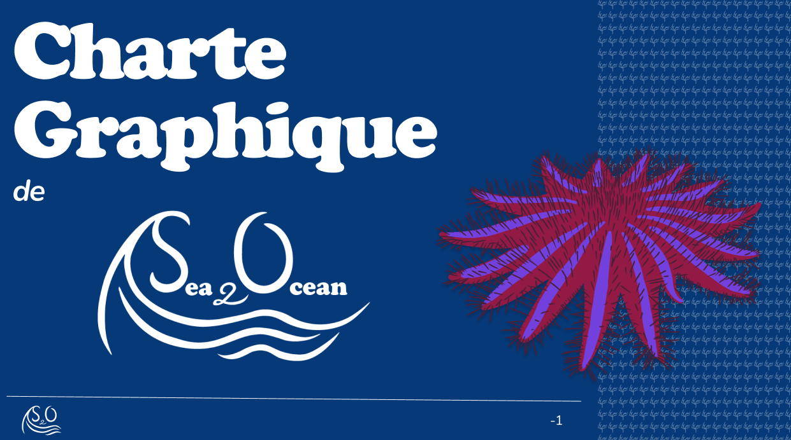

À propos
L'agence S₂O (Sea²Ocean) est une initiative étudiante née dans le cadre du projet transversal GRP3, en réponse à l'Objectif de Développement Durable n°14 — Vie Maritime. Face à la prolifération alarmante de l'Acanthaster planci, l'équipe mobilise communication, création et technologie pour sensibiliser le grand public.
Le problème
L'Acanthaster planci, communément appelée « couronne d'épines », est une étoile de mer dont les proliférations dévastent les récifs coralliens. Un seul individu peut détruire jusqu'à 6 m² de coraux par an. En cas d'explosion de population, elle peut anéantir 90 % des coraux d'une zone entière.
Ces proliférations sont principalement causées par l'activité humaine : surpêche des prédateurs naturels, ruissellement agricole nourrissant les larves, et réchauffement climatique accélérant leur reproduction.
Notre réponse
S₂O déploie une stratégie multicanale incluant un site web, une présence active sur les réseaux sociaux, des affiches de sensibilisation, un jeu vidéo pédagogique (PVZ Maritime) et un film 3D présentant l'univers sous-marin menacé.
Contact
Agence S₂O — Sea²Ocean
Plateformes : Instagram · TikTok · YouTube · LinkedIn · X

Sea Healer : première version jouable en approche
Le Studio de développement avance sur les mécaniques de jeu et les premiers concept arts.

Création de l'environnement aquatique 3D en cours
Le Studio de production travaille sur les coraux, poissons, sable et roches en 3D.

Lancement de la charte graphique S₂O
Palette, typographies, logo — la charte complète de l'agence est finalisée.
S₂O s'installe sur les réseaux sociaux
Instagram, TikTok, YouTube, X et LinkedIn — la stratégie de communication se déploie.